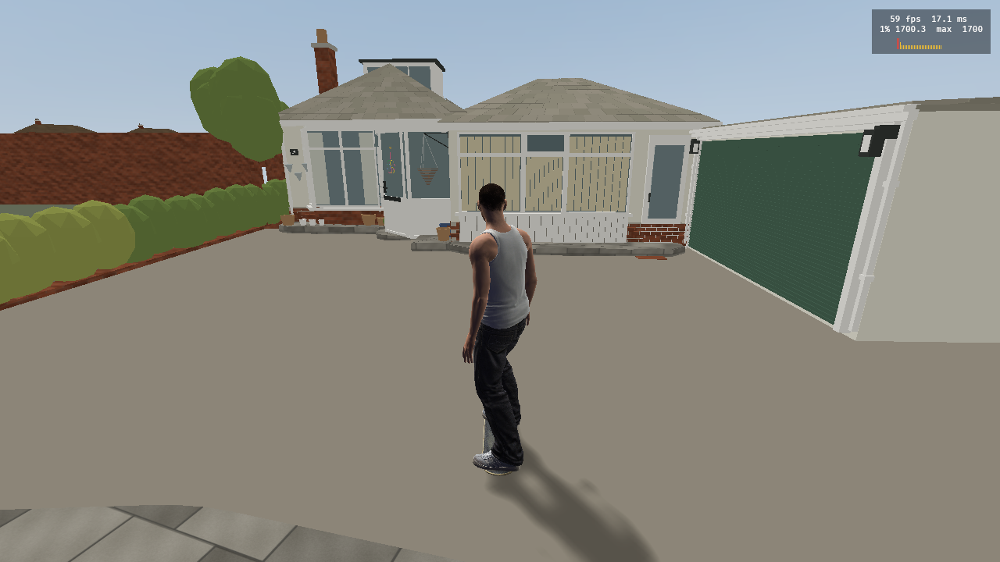
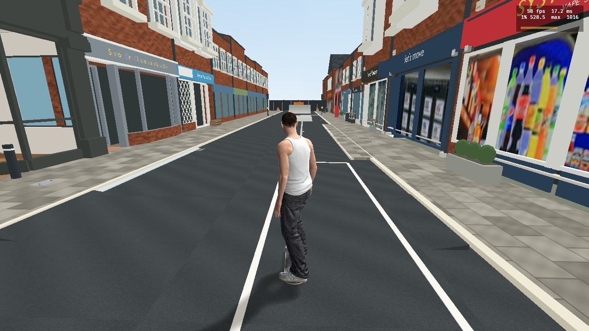

THE PHARMACIE / SYSTON · 14 OCTOBER 2026
A street worth skating.
A separate Blender skate adaptation: loading banks, a civic ledge, street flatbar, manual island and curved return. The approved route and neutral map remain separate.
The film and design stills are Blender previews. A real runtime startup capture appears below. Riding, tricks and grind behaviour remain pending verification.
Start at number 29 Holmdale Road

A supported start on the approach to number 29. The entire exported world is translated together so this start is near the engine origin. Blender placement stays unchanged. Sound-enabled startup now loads rolling, wheel, impact, grind and footstep systems. Full-board landings, grinds and travel across the whole route still need the human trial.
Start verification and limits · Native geometry checks · Feature contact stress check
Repaired street — actual runtime

v62: a continuous level riding surface replaces overlapping starter-road collision. Contact labels are corrected to address the ramp crash. The rebuilt package preserves all visual data, four grind paths and 704 authored skate-feature collision triangles. Native collision checks and runtime startup pass; ridden ramps, landings and grinds still need Sam's controller trial. Controller slot 1 was connected at capture. This earlier capture predates the private audio preparation; the Holmdale start above has sound enabled.
Floor measurements · Native collision checks · Runtime verification and limits
Skate variant — Blender design
All skate obstacles are fictional gameplay adaptations. Existing survey dimensions, hidden footprints and photo reference limitations still apply. Local review; nothing published.